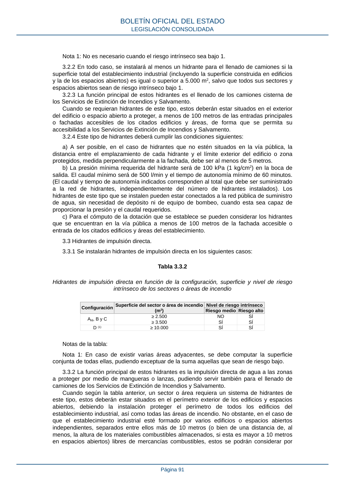

RSCIEI · edición 2025-04-10 · capa asociada
Documento RSCIEI-asociada · SHA-256 del PDF 85aa0af25d51e5b58d8975a4eefbf76d3f57a8933445cfe814ae9c4818a2e3e7
Página física 91 de 108.
Copia fiel del PDF fuente · Fuente oficial
Ficha de la disposición en la fuente oficial
Texto extraído y reorganizado: Basado en datos de la Agencia Estatal Boletín Oficial del Estado. PDF reproducido: Fuente de los datos: Agencia Estatal Boletín Oficial del Estado.
Formato: Texto de la página (Markdown)
Nota 1: No es necesario cuando el riesgo intrínseco sea bajo 1. 3.2.2 En todo caso, se instalará al menos un hidrante para el llenado de camiones si la superficie total del establecimiento industrial (incluyendo la superficie construida en edificios y la de los espacios abiertos) es igual o superior a 5.000 m2, salvo que todos sus sectores y espacios abiertos sean de riesgo intrínseco bajo 1. 3.2.3 La función principal de estos hidrantes es el llenado de los camiones cisterna de los Servicios de Extinción de Incendios y Salvamento. Cuando se requieran hidrantes de este tipo, estos deberán estar situados en el exterior del edificio o espacio abierto a proteger, a menos de 100 metros de las entradas principales o fachadas accesibles de los citados edificios y áreas, de forma que se permita su accesibilidad a los Servicios de Extinción de Incendios y Salvamento. 3.2.4 Este tipo de hidrantes deberá cumplir las condiciones siguientes: a) A ser posible, en el caso de hidrantes que no estén situados en la vía pública, la distancia entre el emplazamiento de cada hidrante y el límite exterior del edificio o zona protegidos, medida perpendicularmente a la fachada, debe ser al menos de 5 metros. b) La presión mínima requerida del hidrante será de 100 kPa (1 kg/cm2) en la boca de salida. El caudal mínimo será de 500 l/min y el tiempo de autonomía mínimo de 60 minutos. (El caudal y tiempo de autonomía indicados corresponden al total que debe ser suministrado a la red de hidrantes, independientemente del número de hidrantes instalados). Los hidrantes de este tipo que se instalen pueden estar conectados a la red pública de suministro de agua, sin necesidad de depósito ni de equipo de bombeo, cuando esta sea capaz de proporcionar la presión y el caudal requeridos. c) Para el cómputo de la dotación que se establece se pueden considerar los hidrantes que se encuentran en la vía pública a menos de 100 metros de la fachada accesible o entrada de los citados edificios y áreas del establecimiento. 3.3 Hidrantes de impulsión directa. 3.3.1 Se instalarán hidrantes de impulsión directa en los siguientes casos: Tabla 3.3.2 Hidrantes de impulsión directa en función de la configuración, superficie y nivel de riesgo intrínseco de los sectores o áreas de incendio Configuración Superficie del sector o área de incendio (m2) Nivel de riesgo intrínseco Riesgo medio Riesgo alto AH, B y C ≥ 2.500 ≥ 3.500 NO SÍ SÍ SÍ D (1) ≥ 10.000 SÍ SÍ Notas de la tabla: Nota 1: En caso de existir varias áreas adyacentes, se debe computar la superficie conjunta de todas ellas, pudiendo exceptuar de la suma aquellas que sean de riesgo bajo. 3.3.2 La función principal de estos hidrantes es la impulsión directa de agua a las zonas a proteger por medio de mangueras o lanzas, pudiendo servir también para el llenado de camiones de los Servicios de Extinción de Incendios y Salvamento. Cuando según la tabla anterior, un sector o área requiera un sistema de hidrantes de este tipo, estos deberán estar situados en el perímetro exterior de los edificios y espacios abiertos, debiendo la instalación proteger el perímetro de todos los edificios del establecimiento industrial, así como todas las áreas de incendio. No obstante, en el caso de que el establecimiento industrial esté formado por varios edificios o espacios abiertos independientes, separados entre ellos más de 10 metros (o bien de una distancia de, al menos, la altura de los materiales combustibles almacenados, si esta es mayor a 10 metros en espacios abiertos) libres de mercancías combustibles, estos se podrán considerar por BOLETÍN OFICIAL DEL ESTADO LEGISLACIÓN CONSOLIDADA Página 91

Datos candidatos: compruebe celdas y notas en el PDF.